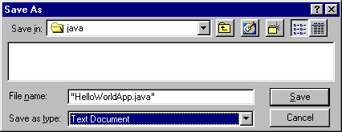
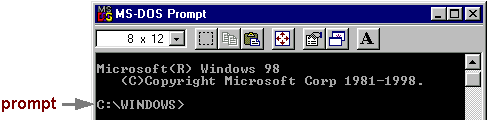
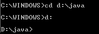
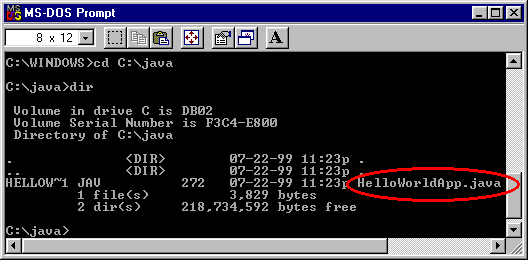
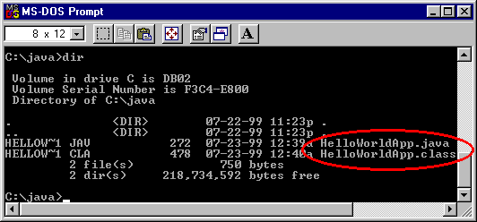
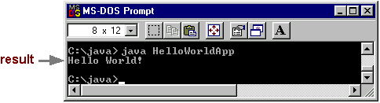
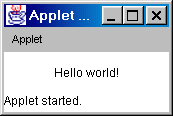

Practica 1. Applet muestra
Objetivo
El alumno aprendera a utilzar las herramientas necesarias para la compilación de una aplicación.
Introducción
Java es un lenguaje de programación los programadores pueden crear programas (applet) para jecutarse en forma independiente o ligados a un programa de navegación, o navegador bajo la web.
Los applets son independientes de dispositivos, lo que significa que el mismo applet puede ejecutarse en un PC con Windows 2000, o Macintosh o una máquina UNIX. Java compila los applets en código de máquina virtual, que el navegador convierte en el código binario que entiende el procesador.
Desarrollo
!Zas..! El clasico Hola Mundo.Tu Primer Programa |
| 1. Material | 2. Crear tu Primera Aplicación
a. Crear un Archivo Fuente Java b. Compilar el Archivo Fuente c. Ejecutar el Programa |
| 3. Crear Tu Primer Applet |
1. Material
Para escribir tu primer programa, necesitarás:- La Edición Estándard de la Plataforma Java 2TM. Puedes descargarla ahora y consultar las instrucciones de instalación.
- Un Editor de texto. En este ejemplo, usaremos el NotePad de Windows. Para encontrar NotePad desde le menú Inicio selecciona Programas > Accesorios > NotePad. Si usas un editor diferente no te será dificil adaptar estas instrucciones.
a.Crear un Archivo Fuente Java.
Tienes dos opciones:
- Puedes grabar el archivo HelloWorldApp.java en tu ordenador y así evitarte todo el tecleo. Luego puedes ir directo al paso b.
- O, puedes seguir estás (largas) instrucciones:
1.Arranca NotePad. En un nuevo documento, teclea el siguiente código:
/** * The HelloWorldApp class implements an application that * simply displays "Hello World!" to the standard output. */ class HelloWorldApp { public static void main(String[] args) { // Display "Hello World!" System.out.println("Hello World!"); } }
Se cuidadoso cuando lo teclees Teclea todo el código, comandos y nombres de archivos exactamente como los ves. El compilador y el intérprete Java son sensibles a las mayúsculas.
HelloWorldApp helloworldapp
2. Graba este código en un archivo. Desde la barrá de menú, selecciona File > Save As. En le caja de diálofoSave As:
- Usa el menú desplegable Save in, para especificar el directorio (o carpeta) donde grabarás el archivo. En este ejemplo, el es el directorio java en la unidadC.
- En la caja de texto File name, teclea, "HelloWorldApp.java", incluyendo las comillas.
- En el menú desplegable Save as type, elige Text Document.
Cuando hayas terminado la caja de diálogo se debería parecer a esto: Ahora pulsa sobre Save, y sal de NotePad.
b. Compilar el Archivo Fuente
Desde el menú Start, selecciona la aplicación MS-DOS Prompt (Windows 95/98) o Command Prompt (Windows NT). Cuando se lanze, se debería parecer a esto: El prompt muestra tu directorio actual. Cuando salimos a una ventana del DOS en Windows 95/98, el directorio actual normalmente es WINDOWS en nuestra unidad C (como s eve arriba) o WINNT para Windows NT. Para compilar el archivo fuente, cambiamos al directorio en el que se encuentra el archivo. Por ejemplo, si nuestro directorio de código fuente es java en la unidad C, deberíamos teclear el siguiente comando y pulsar Enter:
cd c:\java Ahora el prompt debería cambiar a C:\java>.
Nota: Para cambiar a un directorio en una unidad diferente, deberemos teclear un comando extra.
 Como se ve aquí, para cambiar al directorio java en la unidad D, debemos reentrar en la unidad d: Si tecleas dir en la línea de comandos, deberías ver tu archivo.
 Ahora puedes compilar. En la línea de comandos, teclea el siguiente comando y pulsa Enter:
javac HelloWorldApp.java Si el prompt reaparece sin mensajes de error, felicidades. Tu programa se ha compilado con éxito.
Explicación de Error Bad command or file name (Windows 95/98)
El nombre especificado no es reconocido como un comando interno o externo, operable program or batch file (Windows NT)
Si recibes este error, Windows no puede encontrar el compilador Java, javac.
Aquí hay una forma de decirle a Windows dónode encontrar javac. Supongamos que has intalado el SDK de Java 2 en C:\jdk1.2.2. En el prompt deberías tecelar el siguiente comando y pulsar Enter:
Nota: Si eliges esta opción, cada vez que compiles o ejecutes un programam tendrás que preceder a tus comandos javac y java con C:\jdk1.2.2\bin\. Para evitar esto consulta la sección Update the PATH variable en las instrucciones de instalación.C:\jdk1.2.2\bin\javac HelloWorldApp.javaEl compilador ha generado un archivo de bytecodes Java, HelloWorldApp.class. En el prompt, teclea dir para ver el nuevo archivo que se ha generado:
 Ahora que tienen un archivo .class, puedes ejecutar tu programa.
c.Ejecutar el Programa
En el mismo directorio teclea en el prompt:Ahora deberías ver:
java HelloWorldApp  Felicidades!, tu programa funciona.
Explicación de Error Exception in thread "main" java.lang.NoClassDefFoundError: HelloWorldApp
Si recibes este error, java no puede encontrar tu archivo de bytecodes, HelloWorldApp.class.
Uno de los lugares donde java intenta buscar el archivo de bytecodes es el directorio actual. Por eso, si tu archivo de bytecodes está en C:\java, deberías cambiar a ese directorio como directorio actual.
Si todavía tienes problemas, podrías tener que cambiar tu variables CLASSPATH. Para ver si es necesario, intenta seleccionar el casspath con el siguiente comando:
Ahora introduce de nuevo java HelloWorldApp. Si el programa funciona, tendrás que cambiar tu variable CLASSPATH. Para más información, consulta la sección Check the CLASSPATH Variable en las instrucciones de instalación.set CLASSPATH=
3.Crear tu Primer Applet
HelloWorldApp es un ejemplo de una aplicación Java, un programa solitario. Ahora crearás un applet Java, llamado HelloWorld, que también muestra el salido "Hello world!". Sin embargo, al contrario que HelloWorldApp, el applet se ejecuta sobre un navegador compatible con Java, como HotJava, Netscape Navigator, o Microsoft Internet Explorer.Para crear este applet, debes realizar los mismos pasos básicos que antes: crear un archivo fuente Java; compilarlo y ejecutar el programa.
a. Crear un Archivo Fuente Java.
De nuevo, tienes dos opciones:
- Puedes grabar los archivos HelloWorld.java y Hello.html en tu ordenador y así evitarte todo el tecleo. Luego puedes ir directo al paso b.
- O, puedes seguir estas instrucciones:
1.Arranca NotePad y teclea el siguiente código en un nuevo documento:
import java.applet.*; import java.awt.*; /** * The HelloWorld class implements an applet that * simply displays "Hello World!". */ public class HelloWorld extends Applet { public void paint(Graphics g) { // Display "Hello World!" g.drawString("Hello world!", 50, 25); } }Graba este código en un archivo llamado HelloWorld.java.
2. También necesitas un archivo HTML que acompañe a tu applet. Teclea el siguiente código en nuevo documento del NotePad:
Graba este código en un archivo llamado Hello.html.
b. Compilar el Código Fuente.
En el prompt, teclea el siguiente comando y pulsa Return:
javac HelloWorld.java El compilar debería generar el archivo de bytecodes Java, HelloWorld.class.
c. Ejecutar el Programa.
Aunque puedes ver tu applet usando un navegado, podrías encontrar más sencillo probarlos usando la aplicación appletviewer que viene con la plataforma JavaTM . Para ver el applet HelloWorld usando el appletviewer, teclea esto en la línea de comandos:
appletviewer Hello.html Ahora deberías ver: 
Felicidades! tu applet funciona.
regresar |
salir |
continuar |